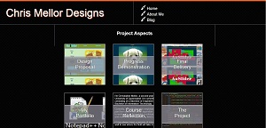

Project Aspects
Design Proposal
The design propsoal which the team had to present were in the form of a poster and speach. My major contribution was the creation of an all inclusesive concept document laying out the fundamental concepts which as a team we would need to develop to create a working project.
Jacob did the major work towards the speach and poster, whilst at the time Joey, Chai and I were busy working on the creation of our webstie.
Reflecting...
The work done towards to the design proposal was mostly completed by Jacob with the assistance of the team when he needed. I wish I had of been able to be more helpful in this area to help spread the work load however it was rather hard at the start of semester with a lot of contact hours and clashing timetables.
- Return Home
Progress Demonstration
The progress demonstration is really where the team project had taken it's split with each team member being allocated a different section of work to maintain. Joey had been given the task of creating the general HTML tempalte alongside the creation and implementation of trove. Jacob was given the job of writing the Progress document and still helping with general design concepts. Chai had been given the role of designing the leaderboard and how it would work and my job was to modify the html document & work on the sliding puzzle aspect itself. I started work off by refining our website; adding navigation, styling the html document appropriately, I did this via changing the colour scheme to follow a similar layout to the Education Queensland logo. I added a background image to make our website have more focus and direction on the content rather than leaving a lot of blank space. I then began working on implementing JQpuzzle a plugin which we used to generate the puzzle. This task was the hardest of all as the creator did not make it easily customisable. We wanted to use our own CSS and styling around the puzzle, creating various difficulties and other concepts to make the game more appealing to the user. This is where I spent majority of my time refining, editing, adding, and master the puzzle. Later on, I added a home page to give the user a better sense of what they were coming into when they visited AuSlider.
Reflecting...
Reflecting back onto this submission, it was clear that our Progress document did not hit the mark. This was due to a lack of communication between the writer of the document and the people working on developing the website. From here one we started focussing more on communicating what was happening with the development of our project to keep everyone in touch. Our presentation went well, we received a lot of helpful feedback in response to our project and what elements needed adjustment to make our website more appealing to the user. We got a lot of positive feedback which let us know we were on track and had to keep going to make a truly well rounded website.
- Return Home
Final Delivery
The final delivery was an overall sucess. We implemented everything that we wanted, we had a fully functioning website with no bugs, and it looked astounding. Again, the final report was written by Jacob, with the team proof reading and making any modifications which were necessary. The trade show was very well done, attracting large crowds to play AuSlider and having overall very positive feedback. The final website was very well designed, with smooth transitions, very appealing visuals, and great functionality all round. The pitch went very well, being able to answer all questions asked with great detail and the pitch written by Jacob was well structured and concise. Overall this final delivery went very well.


Reflecting...
Our project went very well and I was very pleased with how the final delivery went. My major role in working towards the final delivery was working on the website and helping where necessary to aid the others with their coding. I invested majority of my time in refining the final touches which we received from the Project demonstration and this definitely increased the users experience. To improve my process overall with regards to this project I would defintely work better on schedualing due dates for the different aspects of the major design. It would be defintely beneficial to have made adjustments to our allocation of workload so that everyone participated in the development of all of the reports instead of the major party in their creation being Jacob (who did an incredible job). To futher improve the project it would definitely help if we had put some more interest into styling. Our major focus as a team full of programmers was functionality which we definitely did well. However, we could have focused on more designs or variation to make the overal layout for visually pleasing to the user. This is my major area which I need to work on. This could have been done by gaining inspiration from other websites of similar nature.

- Return Home
Portfolio
The portfolio was designed to be a showcase of our ability and to show improvements and what we have learned in DECO1800 in comparison to DECO1400. My knowledge has definitely improved, I've gained a much broader grasp on how Javascript works, it no longer scares me after working on the puzzle in our slider. I've maintained a very basic but refine style, as this is still my approach as a programmer. Using javascript to navigate pages, can be limiting for users who browse with javascript disabled, however in this day and age this is rare; the functionality of smooth transitions, not having to reload the page and just additional functionality is definitely beneficial and is a step towards the future of web development.
Reflecting...
My portfolio is definitely not the best display of my skills as a web developer. Time was a contraining factor in which has effected me drastically. With the portfolio description being released in the later weeks of term where my focus was on working on our major piece of assessment I've found myself feeling rushed to reach the due date, with having two exams worth 70% on the 12th and 13th of November. Studying for these have consumed majority of my time. In the future I'd like to refine my portfolio by creating a new design featuring a more intricate layout and design.
- Return Home
Course Reflection
Meeting Expectations
My original expectations of this course were definitely met. This was the fact that I thought DECO1800 would be an extension on DECO1800- writing in languages such as HTML, Javascript and CSS. The course exceeded my expactations of how difficult it would be and how the learning was structured. The studio sessions were structured in a way of learning I had never experienced but the freedom definitely made the work seem as if we were working on developing a project to be published as if we were qualified web designers. My course expectations remained the same throughout the duration of the course as they were very broad, and general however-applicable.
Learning Across the Course
I learnt a very broad range of things throughout my time spent in this course. I'd never really experienced photoshop or illustrator before coming into DECO1800 and was very interested after doing the first few workshops structured around these programs. The teamwork online module which I had to complete was very insightful, it was definitely very long however it had very useful information which I brought into the course which proved beneficial. My major learning curve was found in the coding however. In DECO1400 I barely touched javascript, it was scary, new and something I'd never seen before and seemed incredibly difficult. However after working in a team with Joey, and being allocated a very Javascript heavy related role my skills developed immensely. I know feel a lot more confident with my ability to code in all three of the languages and my ability to create a website.
Changes to Improve my Experience
The course was conducted rather well, with a very straight forward structure which was very concise and easily interpretted. I definitely enjoyed the studio method of learning due to the freedom which it gave me as a student. My major issue with assessment is how late the portfolio was brought into the course. It would have been very beneficial to me to have the criteria for what we had to create from week 1 or just a general from of discussion around it so that it wasn't such a surprise later on in the semester. To help improve the performance of how our project turned out it would have been a good idea to have people from all different pathways of IT, such as designers, developers and programmers. The way it turned out by all means was nothing to laugh about, however with a more visual web designer we could have been more sucessful in the visual appearance of our final product. The way I changed my outlook on this course to improve my experience was to allocate more time into this large project than I first expected. This was beneficial to the team, project and assessment.
- Return Home
About Me
I'm Christopher Mellor, a second year student studying at the University of Queensland. I'm currently enrolled in a dual degree consisting of a Bachelor of Engineering majoring in Electrical, and a Bachelor of Information Technology. Currently, I'm a Mc'Donalds employee and have been for the past four years. My career aspiration is to work in the IT field whilst I continue to study and move into the Engineering field once I'm finished. IT has always been a passion of mine and I can't wait to see where the field will take me.
Contact Me
You can reach me on:
Mobile:
0439065901Email:
christopher.mellor96@gmail.comblogposts